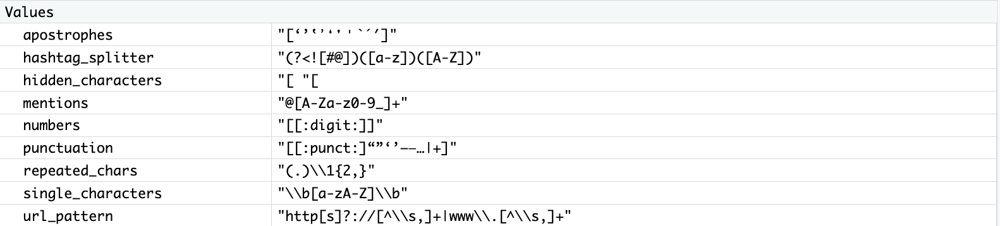

Normalization & Noise Reduction
Why does it matter?
As previously mentioned, in order to perform accurate and reliable analysis, we need to “take out the garbage” first by preprocessing the text to clean, standardize, and structure the input data. These steps help reduce noise and improve the model’s accuracy.
Below we use another analogy to illustrate the impact of noise on data analysis outcomes. Imagine a tree that is slowly dying. On the surface, its leaves may still appear green, but closer inspection reveals branches that are brittle, bark that is cracking, and roots that are struggling to find nourishment. If we only focus on the healthy-looking leaves, we might draw a misleading conclusion about the tree’s overall condition. Similarly, in text analysis, raw data often contains “noise,” such as irrelevant words, inconsistent formatting, or errors, which can obscure meaningful patterns. If we feed this noisy data directly into an analysis, the results can be skewed, incomplete, or misleading, just as judging the tree’s health by its leaves alone would be.
Just as a gardener would prune dead branches, enrich the soil, and care for the roots to revive the tree, data analysts perform preprocessing steps to clean, standardize, and structure the text. By removing noise and focusing on the core content, we give the analysis the best chance to reveal true insights, uncover trends, and support reliable conclusions. In short, the quality of our “data garden” directly determines the health of the insights it produces.

The main goal of normalization is to remove irrelevant content and standardize the data in order to reduce noise. Below are some key actions we’ll be performing during this workshop:
| Action | Why it matters? |
|---|---|
| Remove URLs | URLs often contain irrelevant noise and don’t contribute meaningful content for analysis. |
| Remove Punctuation & Symbols | Punctuation marks and other symbols including those extensively used in social media for mentioning (@) or tagging (#) rarely adds value in most NLP tasks and can interfere with tokenization (as we will cover in a bit) or word matching. |
| Remove Numbers | Numbers can be noise in most contexts unless specifically relevant (e.g., in financial or medical texts) don’t contribute much to the analysis. However, in NLP tasks they are considered important, there might be considerations to replace them with dummy tokens (e.g. <NUMBER>), or even converting them into their written form (e.g, 100 becomes one hundred). |
| Normalize Whitespaces | Ensures consistent word boundaries and avoids issues during tokenization or frequency analysis. |
| Convert to Lowercase | Prevents case sensitivity from splitting word counts due to case variations (e.g., “AppleTV” ≠ “APPLETV” ≠ “appleTV” ≠ “appletv”), improving model consistency. |
| Convert Emojis to Text | Emojis play a unique role in text analysis, as they often convey sentiment. Rather than removing them, we will convert them into their corresponding text descriptions. |
A caveat when working with emojis is that they are figurative and highly contextual. Also, there may be important generational and cultural variability in how people interpret them. For example, some countries may use the Folded Hands Emoji (🙏) as a sign of thank you where others may seem as religious expression. Also, some may use it in a more positive way as gratitude, hope or respect, or in a negative context, where they might be demonstrating submission or begging.
You might have noticed based on the example above that emojis are converted to their equivalent CLDR (common, human-readable name) based on this emoji unicode list, which are not as nuanced and always helpful to detect sentiment. While not always perfect, that is an important step to normalize the data and we will see how this process looks like later on this episode.
The Role of Regular Expressions
Regular expressions (regex) are powerful tools for pattern matching and text manipulation. They allow you to identify, extract, or replace specific sequences of characters in text, such as email addresses, URLs, hashtags, or user mentions. In text cleaning, regex is essential for reducing noise by removing unwanted elements like punctuation, special symbols, or repeated whitespace, which can interfere with analysis. By systematically filtering out irrelevant or inconsistent text, regex helps create cleaner, more structured data, improving the accuracy of downstream tasks like sentiment analysis, topic modeling, or machine learning.
Even though we won’t dive into the syntax or practice exercises here, being aware of regex and its capabilities can help you understand how text preprocessing works behind the scenes and guide you toward resources to learn it on your own.
Working with regular expressions might require some trial and error, especially when you are working with a large and highly messy corpus. To make things easier and make the lesson less typing-intensive, we’ve pre-populated the workbook with regex patterns noted below and will provide a clear explanation of how they are expected to function, so you can follow along confidently.
url_pattern <- "http[s]?://[^\\s,]+|www\\.[^\\s,]+"
hidden_characters <- "[\u00A0\u2066\u2067\u2068\u2069]"
apostrophes <- ("[‘’‛ʼ❛❜＇`´′]")
mentions <- "@[A-Za-z0-9_]+"
hashtag_splitter <- "(?<![#@])([a-z])([A-Z])"
punctuation <- "[[:punct:]“”‘’–—…|+]"
numbers <- "[[:digit:]]"
repeated_chars <- "(.)\\1{2,}"
single_characters <- "\\b[a-zA-Z]\\b"Let’s run this chunk with pattern variables for now, we will get back to each line when covering their corresponding code in our normalization and noise reduction chunk. Notice this patterns will show in our environment as seen below:

Testing regular expressions is essential for accuracy and reliability, since complex patterns often produce unexpected results. Careful testing ensures your regex matches the intended text, rejects invalid inputs, and performs efficiently, while also revealing potential bugs before they impact your system. To make testing more effective, use tools like Regex101 or the Coder Pad cheatsheet or and be sure to check tricky border cases that might otherwise slip through.
Before we start performing text normalization and noise reduction, we should caution you that the order of steps matters because each transformation changes the text in a way that can affect subsequent steps. Doing things in a different order can lead to different results, and sometimes even incorrect or unexpected outcomes. For example, if we remove punctuation before expanding contractions, "can't" might turn into "cant" instead of "cannot", losing the correct meaning.
Alright, let’s return to our workbook to dive into cleaning and normalization. The order in which we apply these steps matters, each transformation builds on the previous one to make the data more consistent, structured, and analysis-ready. Keep in mind, however, that the pipeline we’ll use here is unlikely to perfectly fit every type of textual data; the best approach always depends on your specific dataset and project goals.
0. Creating a New Data Frame
The first step would be to create a new data frame called comments_clean and adding a clean_text column to it:
# Create a new column for the output clean text
comments_clean <- comments %>%
mutate(
clean_text = text %>%Don’t forget the pipe operator `%` since we want to pass the result of this function as an input to the next, as we continue working on the code chunk.
1. Removing URLs
This comes first because URLs can contain other characters (like punctuation or digits) that you’ll handle later, so removing them early prevents interference. Because we have a great variation in format (e.g., http://, https://, or www.) we had to define a regex pattern, where:
- http[s]?:// → matches “http://” or “https://”
- [^\\s,]+ → matches one or more characters that are not spaces or commas (the rest of the URL)
- | → OR operator; matches either the left or right pattern
- www\.[^\\s,]+ → matches URLs starting with “www.” followed by non-space/non-comma characters
Since we already have the URL pattern, we can use str_replace_all() from the stringr package to replace all matching URLs with an empty string in our text.
# Remove URLs
str_replace_all(url_pattern, "") %>%3. Handling Apostrophes
This step helps clean up text by making sure all apostrophes are consistent, rather than a mix of fancy Unicode versions. Applying it to the text column in our comments dataset should look like. In this case, the pattern “[’‘ʼ]” looks for several different kinds of apostrophes and backticks; like the left and right single quotes, the modifier apostrophe, and the backtick. Each of those gets replaced with a simple, standard apostrophe (’`) when we apply the function below:
# Standardize apostrophes
str_replace_all(apostrophes, "'") %>%Note that once again, we are calling the stored variable with the regex containing different forms of apostrophes, especially from social media, PDFs, or copy-pasted content.
4. Expanding Contractions
Now that we have normalized variations of apostrophes, we can properly handle contractions. In everyday language, we often shorten words: can’t, don’t, it’s. These make speech and writing flow more easily, but they can cause confusion for Natural Language Processing (NLP) models. Expanding contractions, such as changing can’t to cannot or it’s to it is, helps bring clarity and consistency to the text because NLP models treat don’t and do not as completely different words, even though they mean the same thing. Also, words like cant, doesnt, and whats lose their meaning. Expanding contractions reduces this inconsistency and ensures that both forms are recognized as the same concept. Expanding it to is not happy makes the negative sentiment explicit, which is especially important in tasks like sentiment analysis.
So, while it may seem like a small step, it often leads to cleaner data, leaner models, and more accurate results. First, however, we need to ensure that apostrophes are handled correctly. It’s not uncommon to encounter messy text where nonstandard characters are used in place of the straight apostrophe (’). Such inconsistencies are very common and can disrupt contraction expansion.
| Character | Unicode | Notes |
|---|---|---|
' |
U+0027 | Standard straight apostrophe, used in most dictionaries |
’ |
U+2019 | Right single quotation mark (curly apostrophe) |
‘ |
U+2018 | Left single quotation mark |
ʼ |
U+02BC | Modifier letter apostrophe |
` |
U+0060 | Grave accent (sometimes typed by mistake) |
To perform this step we will be using the function replace_contraction from the textclean package to make sure that words like “don’t” become “do not”, by adding the following line to our code chunk:
# Expand contractions (e.g., "don't" → "do not")
replace_contraction() %>%5. Removing Mentions
Continuing with our workflow, we will now handle direct mentions and usernames in our dataset, as they do not contribute relevant information to our analysis. We will use a function to replace all occurrences of usernames preceded. Since we have pre-populated the regular expression and stored it in the variable “mentions”, mentions <- "@[A-Za-z0-9_]+" we will only need to add that we want to replace it with an empty string and remove them.
# Remove mentions (@username)
str_replace_all(mentions, "") %>%7. Converting to Lowercase
Having all text converted to lowercase will be our next step, by adding the following line to our code chunk:
# Convert to lowercase
str_to_lower() %>%8. Cleaning Punctuation, Symbols and Numbers
Alright, time to remove punctuation and symbols, and then numbers.
But first, last break it down, the punctuation regex pattern, where [[:punct:]] is character class in regex that matches any standard punctuation character, including: ! ” # $ % & ’ ( ) * + , - . / : ; < = > ? @ [ ] ^ _ ` { | } ~. To be safe and because our dataset is really messy, we added extra characters (“”‘’–—…|+) to catch some special quotes, dashes, ellipsis, and symbols that [[:punct:]] might miss. Calling that variable, we can remove them by adding to our code:
# Remove punctuation
str_replace_all(punctuation, " ") %>%Next, last clear some numbers by adding [[:digit:]]+. This is the regex pattern matches any single digit (0–9) and + means one or more digits in a row. So it matches sequences like 7, 42, 2025, etc:
# Remove digits
str_replace_all("[[:digit:]]+", " ") %>%9. Handling Elongation
In user-generated content, it’s common to see repeated letters used for emphasis (e.g., “Amaaaazing,” “Loooove”). For that, we have the regex pattern repeated_chars <- "(.)\1{2,}", where:
(.): captures group that matches any single character (except line breaks, depending on regex flavor). The.is a wildcard. The parentheses()capture whatever character matched for later reference.\\1: refers to “whatever was matched by the first capturing group.” In other words, it matches the same character again.{2,}: means “repeat the previous element at least 2 times.”
Putting it together (.)\\1{2,} matches any character that repeats 3 or more times consecutively. Why 3? Because the first occurrence is matched by (.) and {2,} requires at least 2 more repetitions, so total = 3+.
Because the pattern is already in our workbook, we can simply add:
# Normalize repeated characters (e.g., loooove → love)
str_replace_all(repeated_chars, "\\1") %>%Can you guess what "\1" does? It uses the character we captured earlier, keeping it in the text.
10. Convert Emojis to Text
Okay, now we’ll convert emojis into their text descriptions to make them machine-readable, using the emoji package to help with this step. We need to first load the emoji dictionary:
Getting the emoji dictionary
# Load the emoji dictionary
emoji_dict <- emo::jis[, c("emoji", "name")]
emoji_dictTake a look at the emoji dictionary we loaded into our RStudio environment. It’s packed with more emojis and some surprising meanings than you might expect.
We will then write a separate function to deal with those emojis in our dataset:
# Function to replace emojis in text with their corresponding names
replace_emojis <- function(text, emoji_dict) {
stri_replace_all_fixed(
str = text, # The text to process
pattern = emoji_dict$emoji, # The emojis to find
replacement = paste0(emoji_dict$name, " "), # Their corresponding names
vectorize_all = FALSE # element-wise replacement in a same string
)
}Wait, we are not done yet! We still have to add the replace_emojis function, based on our loaded dictionary, into our code chunk. This will replace the emojis with their corresponding text on our dataset:
# Replace emojis with textual description (function - see above)
replace_emojis(emoji_dict) %>%Neat! Let’s re-run the code chunk and check it once again. With emojis taken care of, we can now apply the next and final normalization and noise reduction step.
13. Removing single characters
After removing digits and handling contractions, some single characters may remain in the text. For example:
"S1"(referring to “Season one”) would become"s"after digit removal.Possessive forms like
"Mark's"would turn into"Mark s"once the apostrophe is removed.
These isolated single characters generally do not carry meaningful information for analysis, so we should remove them from the dataset to keep our text clean and focused.
We will be using the function str_replace_all() comes from the stringr package:
# Remove single characters (e.g S1 which became S)
str_replace_all(single_characters, "") %>%12. Dealing with Extraspaces
After completing several normalization steps, we should also account for any extra spaces at the beginning or end of the text. These often come from inconsistent user input, copy-pasting, or formatting issues on different platforms. Let’s clean up these spaces before moving on to the next episode.
# Remove extra whitespaces
str_squish()Putting every step together we should have the following code:
#Create a new column for the output clean text
comments <- comments %>%
mutate(
text_cleaned = text %>%
# Remove URLs
str_replace_all(url_pattern, "") %>%
# Replace hidden/special characters with space
str_replace_all(hidden_characters, " ") %>%
# Standardize apostrophes
str_replace_all(apostrophes, "'") %>%
# Expand contractions (e.g., "don't" → "do not")
replace_contraction() %>%
# Remove mentions (@username)
str_replace_all(mentions, "") %>%
# Split camelCase hashtags
str_replace_all(hashtag_splitter, "\\1 \\2") %>%
# Convert to lowercase
str_to_lower() %>%
# Remove punctuation
str_replace_all(punctuation, " ") %>%
# Remove digits
str_replace_all("[[:digit:]]+", " ") %>%
# Normalize repeated characters (e.g., loooove → love)
str_replace_all(repeated_chars, "\\1") %>%
# Replace emojis with textual description (function - see above)
replace_emojis(emoji_dict) %>%
# Remove single characters (e.g S1 which became S)
str_replace_all(single_characters, "") %>%
# Remove extra whitespaces
str_squish()
)Neat! Our normalization and noise reduction code chunk is complete, but don’t forget to close the parentheses before running it! Let’s see and compare the original “text column” compares to “text_cleaned”.
One more thing before we are done
Oh, no, if we search for “s1_1755” we will notice that we still have a waffle 🧇 emoji in that comment. Well, not too worry, while this emoji wasn’t included in the original dictionary we used, we can still add it to it for automatic handling:
{emoji_dict <- emo::jis[, c("emoji", "name")]}
emoji_dict <- emoji_dict %>% add_row("emoji" = "🧇", "name" = "waffle")
emoji_dictLet’s re-run the code chunk and check how those emojis were taken care of. With normalization and noise reduction completed, we are now ready to move to the next preprocessing step: tokenization.